活动现场执行
门店/物料落地
从设计文件到真实场景From Design Files to Real-world Materials
跟进菜单、展位门头、灯箱、价格牌和活动物料在现场的安装、展示与信息清晰度。团队协作与工作瞬间
跨部门沟通与现场协同Team Collaboration & Work Moments
在品牌、市场、门店和活动团队之间保持沟通，协助现场问题判断和项目复盘沉淀。Working Moments
现场与协作记录On-site & Collaboration Records
这些照片重点展示项目进入真实场景后的执行状态，包括现场销售、物料应用、顾客互动和团队协作。
活动现场执行 / Event Execution
高客流活动中的现场推进On-site Operations in High-traffic Events
现场照片呈现了高客流活动中的展位曝光、顾客排队、菜单浏览和点单场景。我的工作重点在于提前规划促销方案和人员安排，并在现场根据客流、出品节奏和反馈持续跟进执行。
- 根据活动主题和消费场景确认主推产品、价格表达和售卖节奏。
- 跟进人员分工、物料摆放、菜单露出和现场沟通效率。
- 活动结束后整理销售表现、利润率和现场问题，为下一次活动优化。


门店/物料落地 / Retail & Material Implementation
从设计输出到真实场景应用From Design Output to Real-world Application
这部分侧重展示设计物料在真实场景中的呈现效果，包括展位门头、菜单牌、活动桌布、产品展示和门店应用。现场落地会直接影响顾客识别效率，因此需要同时考虑尺寸、距离、视线和安装条件。
- 将活动主视觉、菜单和价格信息转化为可安装、可识别的现场物料。
- 检查物料在不同距离、不同光线和高客流环境下的信息可读性。
- 结合现场反馈调整摆放方式，提升品牌露出和点单效率。


团队协作与工作瞬间 / Team Collaboration & Work Moments
项目背后的沟通与协同Communication and Coordination Behind the Work
这组照片集中呈现门店活动、客户品鉴、团队协作和现场服务的真实片段。除了视觉设计输出，我也参与活动沟通、现场支持和复盘跟进，让品牌体验从画面延伸到实际服务场景。
- 与市场、门店、供应商和活动团队协作，推进物料、产品和人员安排落地。
- 在现场根据顾客反馈和运营需求协助调整展示与服务节奏。
- 通过项目复盘沉淀经验，为后续活动和门店视觉支持提供参考。
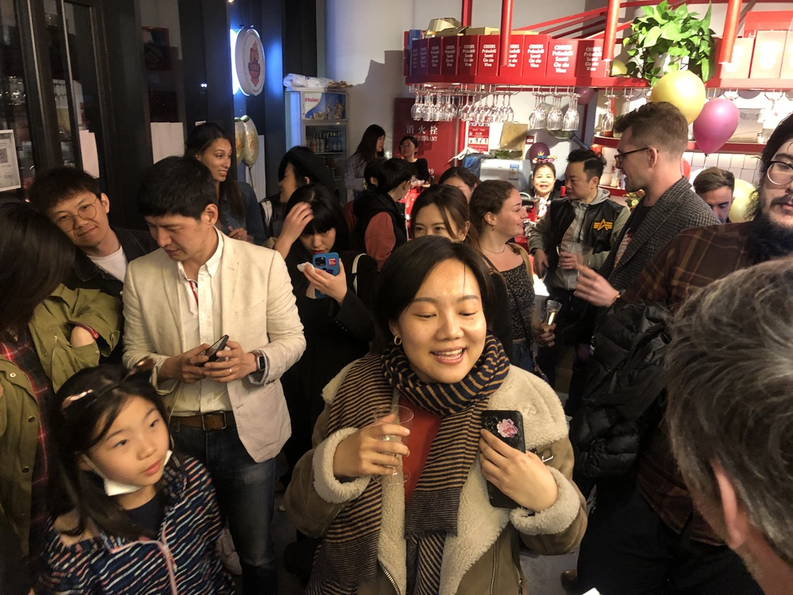
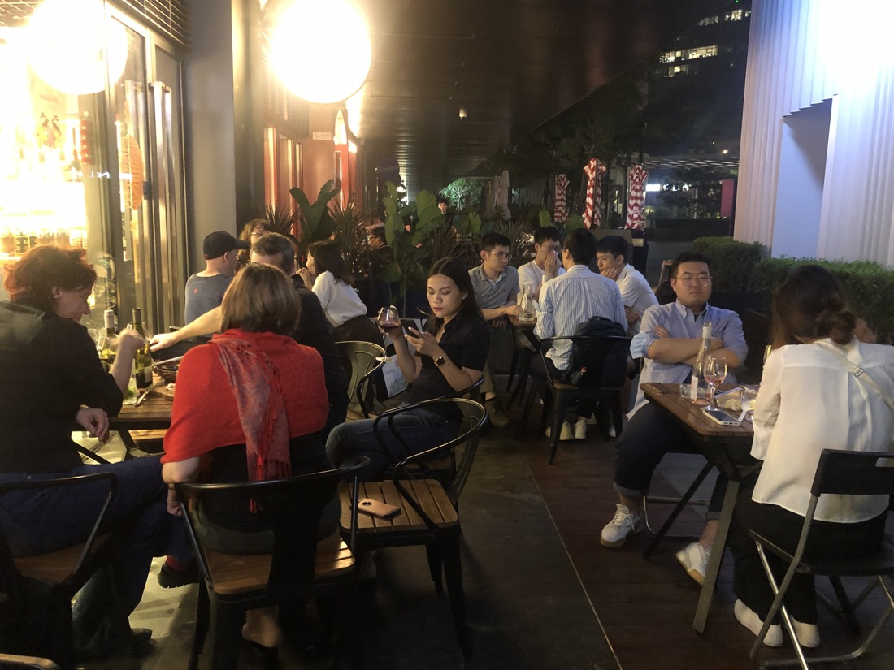
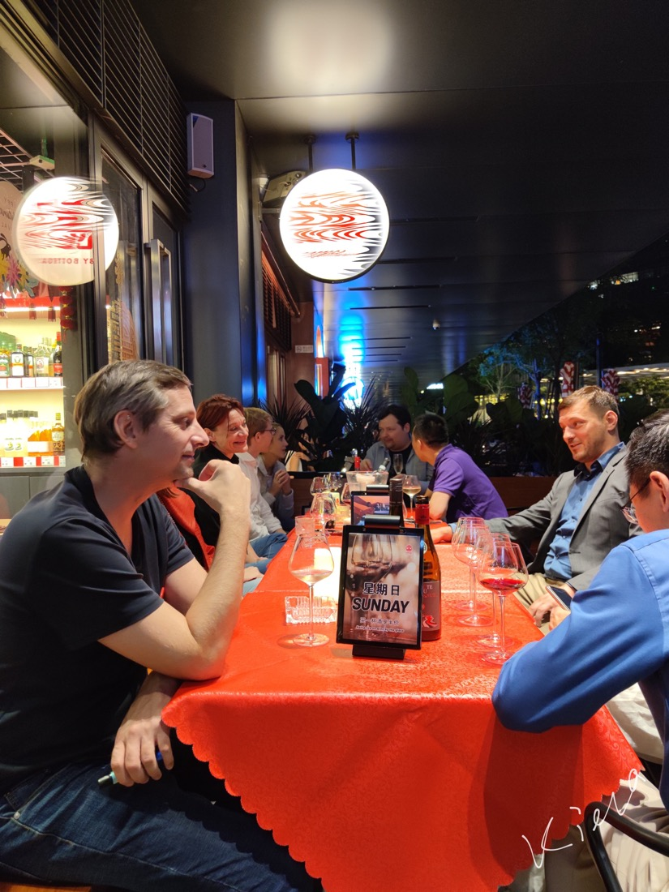
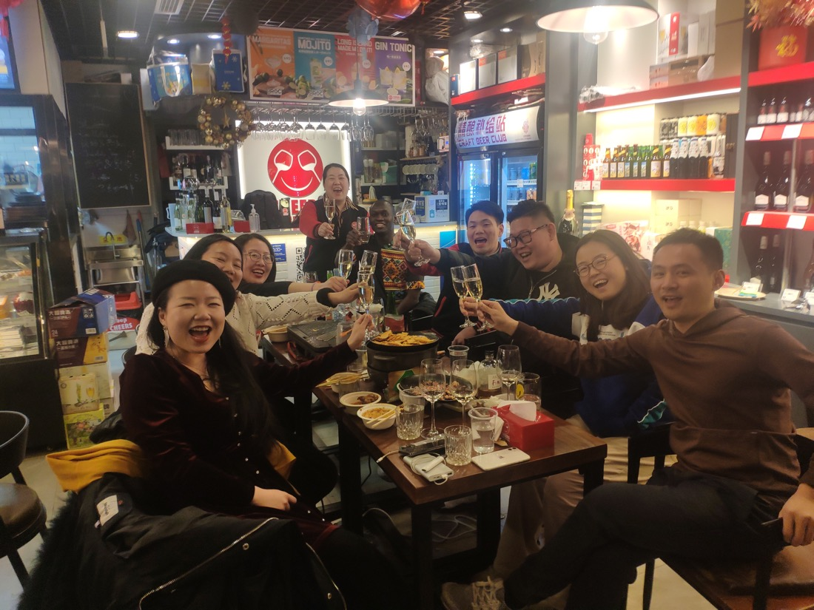
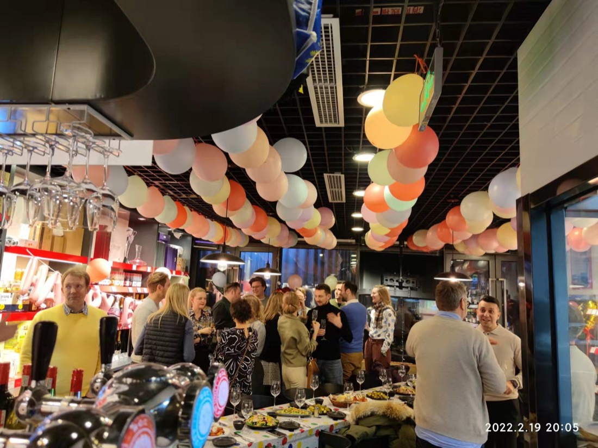
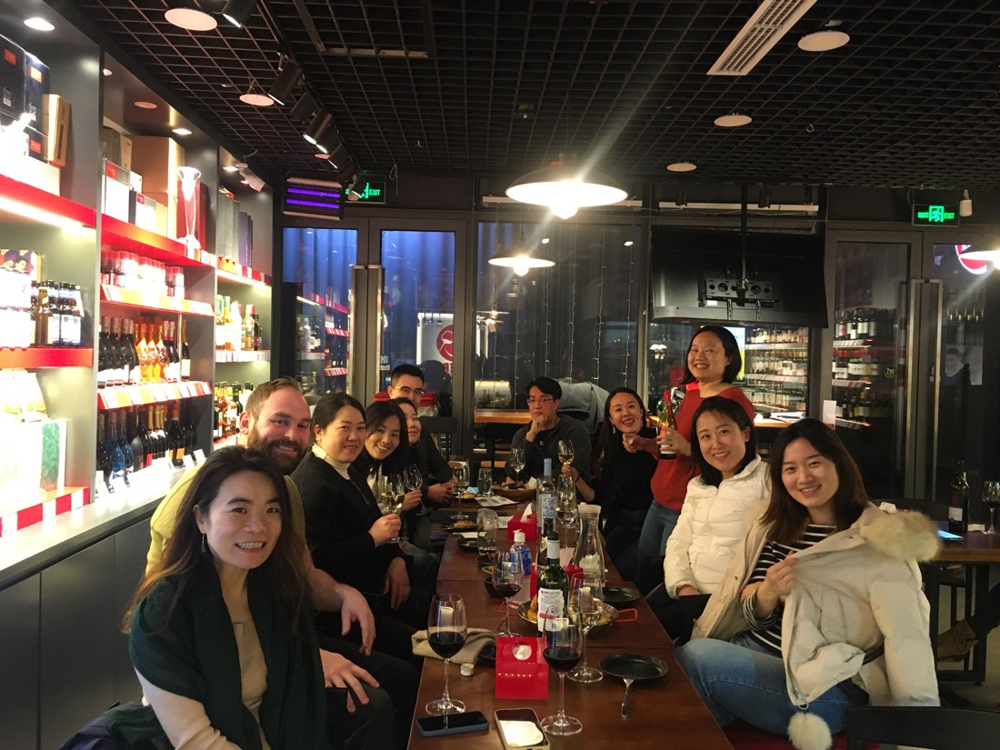
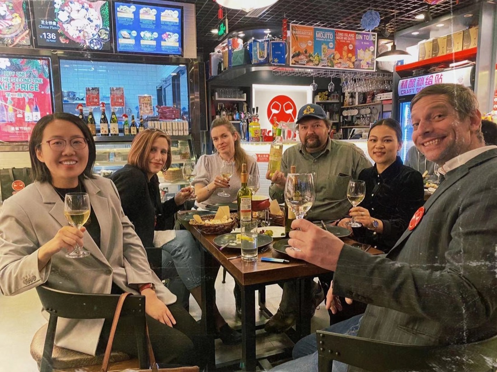
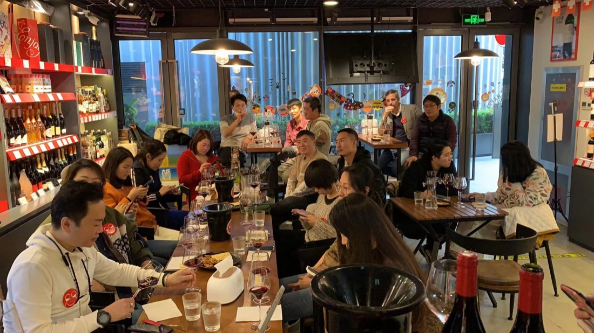
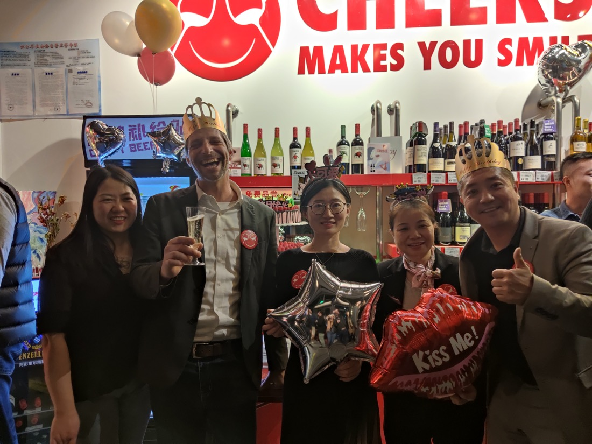
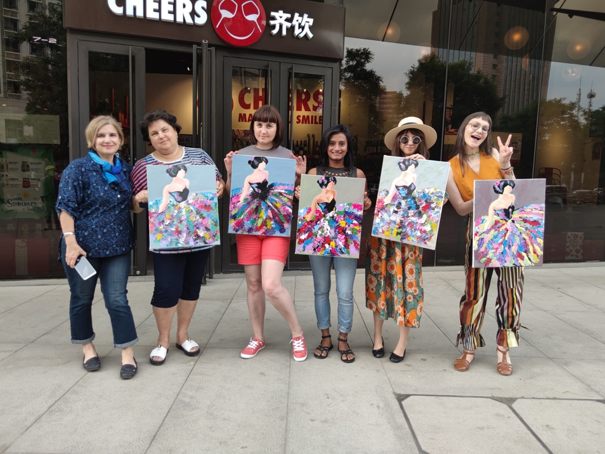
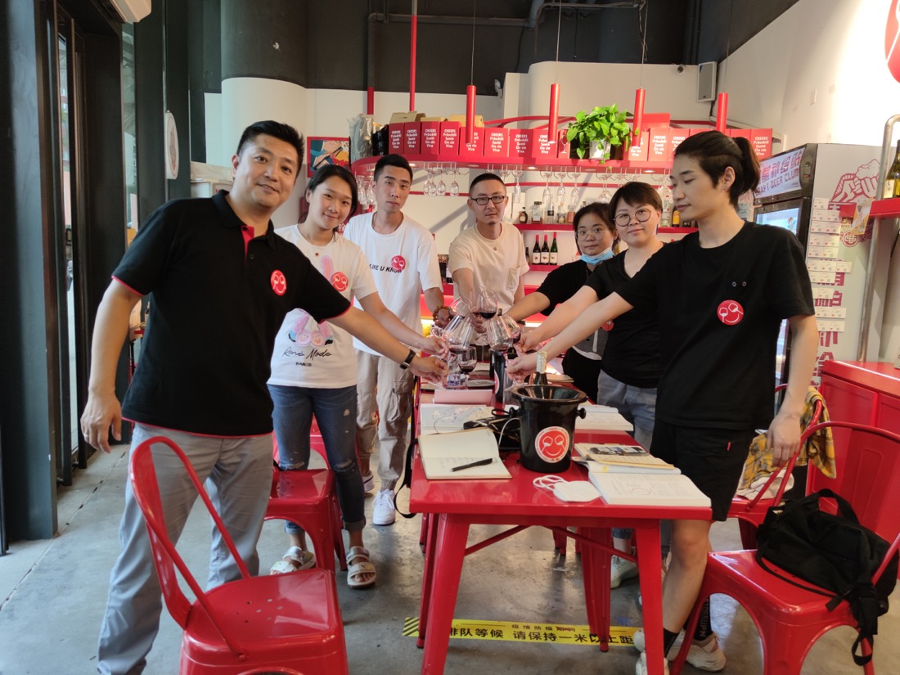
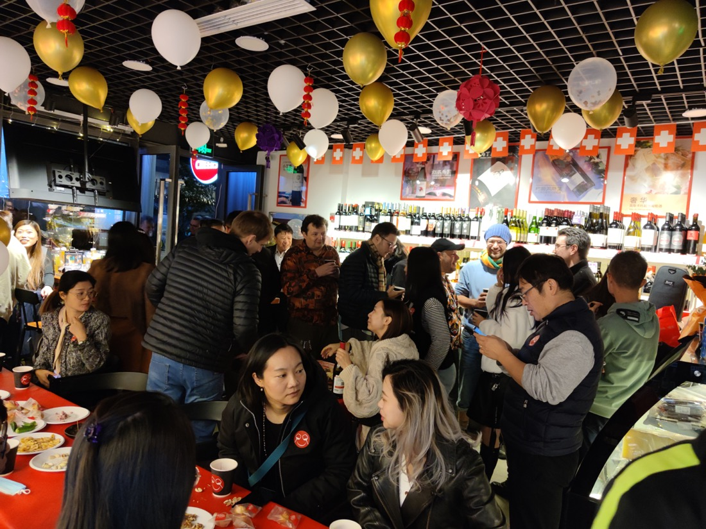
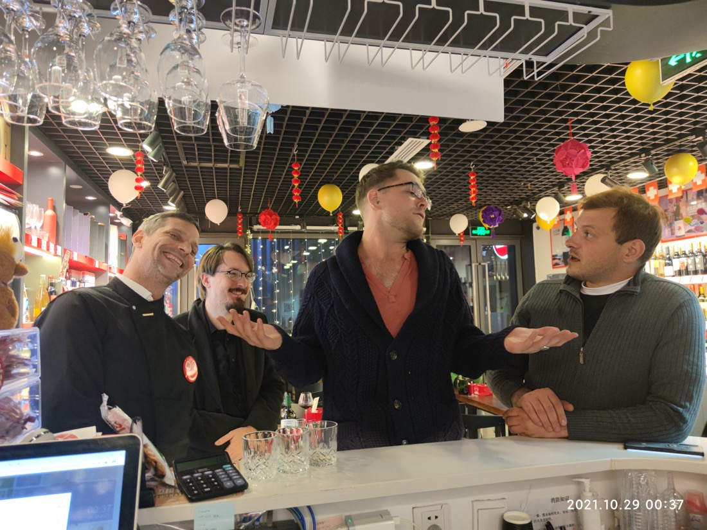